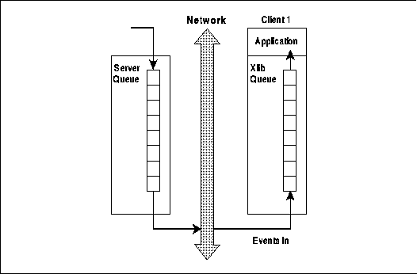
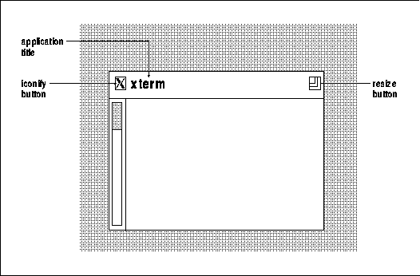
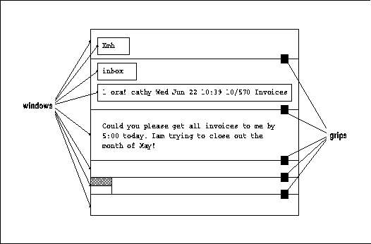
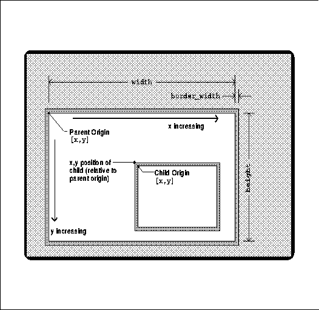
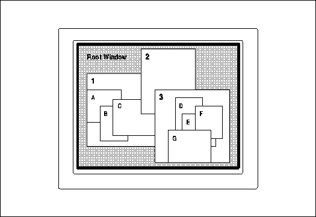
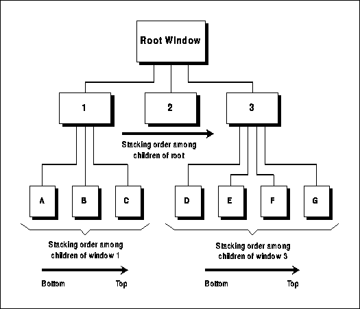
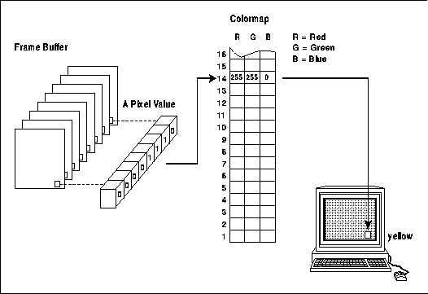
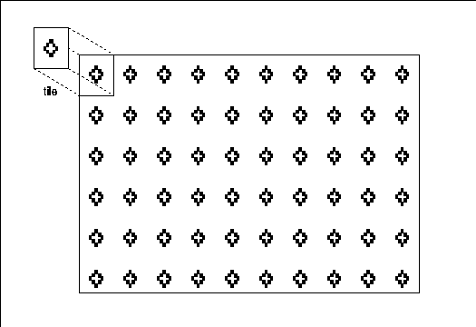
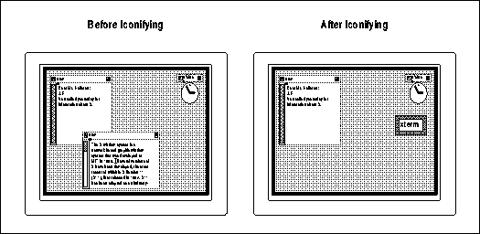

Xlib Programming Manual (O'Reilly & Associates, Inc.) |
When learning a new programming language, many programmers prefer to look at a few code samples and then begin programming right away, looking up more information as they need it. This manual is organized so that most of it is useful both as a tutorial and as a reference. There are lots of code samples and fragments in this manual to help the person who likes to read code more than words. Around the code they will find many of the concepts described that are necessary for understanding that particular example.
The "just-look-at-the-examples" approach works up to a point. It allows a sharp individual to get "something" running in a very short time. Eventually, however, programmers find that in order to get the most out of a system--and sometimes even to get it do anything useful--a lot of underlying issues must be understood. In X, there are a lot of interrelated concepts and assumptions that are so basic that the programmer should know them cold. An hour or so spent reading about the system in general can save many hours of programming that leads to a dead end when the approach turns out to be wrong.
This chapter describes those underlying issues and assumptions
that are so important to programming with Xlib. It goes into considerably
more detail than the brief conceptual overview provided in Chapter 1, "Introduction."
After reading this chapter, you will be well prepared to understand the
rest of this manual and will have a sound idea of what is required to write
an X application. This chapter describes how Xlib works, including a description
of window concepts and characteristics, graphics, and events, and reviews
the issues that you will need to think about in order to program.
First of all, X was designed to provide windows on bitmapped terminals. This has been done before but not in a way designed to be easily portable to many different brands of hardware, from PCs to supercomputers. The code was designed to stress easy portability, even between different operating systems, but still to allow high performance.
Second, X was designed to allow many different types of machines to cooperate within a network. This was one of the major innovations in the X design. There are several standard networking protocols, but there was lacking a widely adopted standard for a higher-level protocol specifying what should be sent over the network to drive a window system. The first thing that was determined about X was the protocol used to communicate across the network.
Third, the developers of X decided that it should not require (or even imply) a particular style of user interface. Practically speaking, X would not have been adopted as a standard by many companies if it had implied a user interface incompatible with their proprietary window systems. In addition, the developers of X felt that the issues surrounding the design of a window-based user interface for X were not sufficiently worked out at present. An important design goal was thus to make X "policy free."
To accomplish these goals, the X Window System had to be designed from the bottom up. To work over a network, there had to be programs running at both ends of the connection to send and receive the information and to interpret it. The end that controls the display and input devices was named the server. At the other end are clients--programs written using Xlib to interface with the X protocol. This is shown in Figure 2-1.
Clients and servers

Actually, although this manual describes Xlib, the C language interface to the X protocol, there is also a Lisp interface, and there are likely to be others. Any language binding that can generate and receive X protocol requests can communicate with a server and be used with the X Window System. But, at present, Xlib is the most popular low-level programming interface used with X, because C is so widely available.
A protocol request is generated by Xlib and sent to the server. A protocol request can carry a wide variety of information, such as a specification for drawing a line or changing the color value in a cell in a colormap or an inquiry about the current size of a window. Most Xlib routines generate protocol requests. The exceptions are routines that only affect data structures local to Xlib and do not affect the server (regions and the resource manager are the primary examples of these exceptions).
A protocol reply is sent from the server to Xlib in response to certain requests. Not all requests are answered by replies--only the ones that request information. Requests that specify drawing, for example, do not generate replies. When Xlib receives a reply, it places the requested data into the arguments or returned value of the Xlib routine that generated the request. An Xlib routine that requires a reply is called a round-trip request. Round-trip requests have to be minimized in clients because they lower performance when there are network delays.
An event is sent from the server to Xlib and contains information about a device action or about a side effect of a previous request. The data contained in events is quite varied, because it is the principal method by which clients get information. Events are kept in a queue in Xlib and can be read one at a time by the client. The range of types of events that the server sends to a client is specified by the client.
An error tells the client that a previous request was invalid. An error is like an event, but it is handled slightly differently within Xlib. Errors cannot be read by the Xlib calls that read events. Instead, errors are sent to an error-handling routine in Xlib. The default error handler simply prints a message and exits; it can be replaced by a client-specific error-handling routine.
Xlib sends the buffer full of requests to the server under three conditions. The most common is when an application calls an Xlib routine to wait for an event but no matching event is currently available on Xlib's queue. Since, in this case, the application must wait for an appropriate event anyway, it makes sense to flush the request buffer. Second, Xlib calls that get information from the server require a reply before the program can continue, and therefore, the request buffer is sent and all the requests acted on before the information is returned. Third, the client would like to be able to flush the request buffer manually in situations where no user events and no calls to query the server are expected. One good example of this third case is an animated game, where the display changes even when there is no user input.
Let's look at how this works in practice. When the application starts up, all the requests that create the initial appearance of the application are queued up by Xlib. Then the application goes into its event loop and calls XNextEvent(). Since nothing has yet been sent to the server, there are no windows and therefore no events have yet been generated. So XNextEvent() causes all the requests to be sent to the server, displaying the application. Meanwhile, the application is still waiting for the first user input. When the user moves the mouse or presses a button or key, the server, sends the events to Xlib as soon as the network allows--it does not queue them or group them (except under rare conditions involving grabs discussed in Section 9.4, "Grabbing the Keyboard and Pointer"). Normally, once an event arrives, the application generates more requests to draw--for example, highlighting the border of a button. These stay queued in Xlib until all the events that have already arrived have been processed. Once the application arrives at XNextEvent() and no more events are in the queue, the queued requests are sent to the server and the process starts again.
Using Xlib calls, the client can flush the connection in three ways: by calling a routine that requires an immediate reply (a routine with Query, Fetch, or Get in its name); by calling certain event-reading routines when no matching event exists on Xlib's queue; or by calling the routines XFlush or XSync(). The first of these actions says to the server, "I need some information; please act on these requests right away and then give me the information." The second says, "I'm waiting for a certain kind of event, so I'll check if you already sent the event over to Xlib. If not, please act on these requests immediately, and then I'll be waiting for the event." The last one says, "I don't need any information from you now, but I need you to act on these requests immediately." Normally, the last method is not used much because there are enough of the first two types of Xlib calls in the client to make the transactions frequent enough.
You should already know that Xlib maintains a queue of the events for each server to which an application is connected, as shown in Figure 2-2. Whenever events arrive from the server, they are queued until the client reads them.
The server's event queue and a client's event queue

The fact that Xlib queues both input and output is very important in application programming and especially in debugging. It means that drawing requests will not appear in a window until the request buffer is flushed. It means that errors are not discovered by the server until the requests arrive at the server and are processed, which happens only after Xlib flushes the request buffer. Once discovered, the error is reported immediately to the client. In other words, several Xlib routines may be called before an error caused by an earlier routine is reported. These are two of the most visible examples of the effects of buffering. See Section 2.6.3, "Debugging an X Application" for more details on how buffering affects programming and debugging.
Whenever an operation is to be performed on a window (or any other resource), the ID of the window is used in one argument to the Xlib routine. This means that instead of an entire structure full of data being sent over the network with an Xlib routine call, only a single integer that refers to that structure need be sent. Remember that since the client and the server may be running on different machines, pointers cannot be used to refer to structures. The caveat of the resource approach is that the client must query the server when it needs information about resources, which, as mentioned above, leads to network delays. As it turns out, clients normally do not need to query the server very often, and the resource abstraction greatly simplifies programs.
If any client knows the ID of a resource, that client can manipulate that resource even if some other client created the resource. That means that more than one client can draw into the same window, although that is not often desirable. More importantly, this is how window managers are implemented--they can move and resize application windows because they know the IDs.
Be warned that there is another use of the term "resource" in X that pertains to the resource manager. A resource in the context of the resource manager is a user-preference specification that controls user-customizable elements of an application. Fortunately, these two uses of the term resource apply to different parts of X and therefore are not too difficult to keep separate. One use applies to server-maintained data structures, and the other to user customization of an application.
Properties have a string name and a numerical identifier called an atom. An atom is an ID that uniquely identifies a particular property. Property name strings are typically all upper case, with words separated by underscores, such as "WM_COLORMAP_WINDOWS". Atoms are used to refer to properties in routine calls so arbitrary-length property name strings do not need to be sent over the network. An application gets the atom for a property by calling XInternAtom(). You specify the string name for the property as an argument to XInternAtom(), and it returns the atom. From this point on, the application uses only the atom to refer to that property. Every application that uses this procedure will get the same atom for the same property name string, if it is connected to the same server (that has not been reset).
Some atoms, called predefined atoms, are defined when the server initializes. An application does not need to use XInternAtom() to get these atoms. Instead, these atoms are available as symbolic constants beginning with XA_. These atoms identify properties whose contents have a certain meaning known by convention to all clients. The properties themselves do not have any contents until a client or the window manager sets them. Some of the properties described in this manual have predefined atoms and others do not, for historical reasons. Where predefined atoms are available, such as XA_WM_HINTS, we will use them in the text to refer to the property. For properties with no predefined atoms, we will use the string property name such as WM_COLORMAP_WINDOWS, which does not begin with XA_ and is not in Courier typeface. This tells you whether you will need to call XInternAtom() before using the property.
A group of related clients or an extension may define other properties and atoms that will have a meaning known to all the clients in the group or using the extension.
Atoms for properties are analogous to the IDs used to refer to server resources, except that both an atom and a window are needed to uniquely identify a property. The same atom would be used to identify a property on one window as on another--only the window is different in the calls to set or read this property on two windows. Only the type Atom is ever used in client code; properties are the underlying data managed by the server.
One of the most important uses of properties is to communicate information from applications to the window manager and vice versa. The application sets the standard properties on its top-level window to specify the range of sizes it prefers for its top-level window and other information. These properties are called "standard" because they are the minimum set that an application should specify. Properties also communicate the other way; for example, the window manager specifies what sizes of icon pixmaps it prefers.
For more information on properties and atoms, see Section 12.1, "Properties and Atoms."
Most window managers decorate the main windows of all applications with a titlebar and various tools for iconifying and resizing the application. The window manager does this by creating a separate window that fits behind the main window of each application. It is this separate window that has the decorations on it. This is important mainly because your application code does not need to handle this drawing. Figure 2-3 shows the titlebar added to an application by twm, the standard window manager in the MIT distribution as of R4.
Titlebar added to applications by the twm window manager

Much of the communication between clients and the window manager and vice versa occurs through properties (the rest occurring through events). Many of the properties are known as hints because they may not necessarily be honored by the window manager, even if one is running. An application must be prepared for the window manager to ignore, modify, or honor the preferences it indicates through the window manager hints. The properties themselves do not have valid contents until applications or the window manager set them.
Quite a few of the features of Xlib (and the X protocol) exist only to give the window manager the mechanism to enforce its authority. These are described in Appendix L, Interclient Communcation Conventions, of Volume Zero, X Protocol Reference Manual (as of the second printing). They will not be needed by normal applications.
One such feature is called substructure redirection. Substructure refers to the size, position, and overlapping order of the children of a window. Redirection refers to the requests by applications to change the configuration of these windows being sent to the window manager for approval instead of actually getting acted upon by the server. Substructure redirection allows a window manager to intercept any request by an application to change the size, position, border width, or stacking order (known collectively as the window configuration) of its top-level windows on the screen. Any application request to change the configuration of its top-level window will be canceled, and instead an event will be sent to the window manager indicating the arguments used in the reconfiguration request. The window manager can then decide what size, position, and stacking order to grant the application, and the window manager will reconfigure the window to those dimensions. For temporary windows such as pop-up menus and dialog boxes, the substructure redirect feature can be turned off using a window attribute.
Substructure redirection may seem obscure, but it has two significant implications for applications. The first is that the application cannot assume that the configuration it specifies for a window will actually be reflected in the window on the screen. This is true whether the configuration was set by creating the window or by reconfiguring the window. That means that the application must always determine the new configuration of the window before drawing into it. It can do this by selecting a certain event type which contains the window configuration.
The second important implication of substructure redirection concerns the mapping of a top-level window. Because the window manager can intercept the mapping request, and it might take some time before the window manager decides on a window configuration and maps the window itself, an application cannot assume that the window is visible immediately. That means it cannot draw into the window immediately. The application must wait until it receives an event indicating that the window is visible before drawing into the window.
Communicating with the window manager, and window management in general, is a long story which we'll describe more fully in Chapter 3, "Basic Window Program," and Chapter 12, "Interclient Communication."Chapter 16, "Window Management," gives an example of a simple window manager and describes communication with applications from the window manager's perspective.
Most window managers today also have the ability to start and kill applications. This is known a session management. However, they can usually start only xterm and a few other basic clients. A true session manager can be a separate client. It would be able to start any client and control its command line arguments and save the state of a whole group of clients (before the user logs out) and later restore them to the same position on the screen (when the user logs back in). This level of capability is not yet available (but people are working on it). Each application supplies its command line as a hint so that the window or session manager has enough information to restart it in its current state.
Now you should have an idea of how Xlib works. Let's move
on to a description of windows.
Each window (on a screen running X) can be involved in a different activity, and the windows currently in use are placed so they are at least partially visible. The window manager lets you move a different window to the top when necessary or rearrange the size and position of the windows.
What you may not have realized is that some of these windows, such as the ones created by the mail handler xmh, are made up of many layered windows of various sizes. The scrollbars, titlebar, command buttons, and other features of the user interface are actually separate windows that provide information to the user or allow for input providing convenient control, as shown in Figure 2-4. There is more here than meets the eye.
The windows used to create an instance of the xmh application

First of all, a window always has a parent window, which is assigned as the window is created. Each window is contained within the limits of its parent. The window cannot display output in areas outside itself and cannot receive input from the keyboard or the pointer while the pointer is outside itself (unless a grab or keyboard focus is in effect, as described in Sections 8.3.2.1 and 8.3.2.2). Every window fits in a hierarchy set up by its children, its parent, its parent's parent, and so on. The very first window, the only one that has no parent, is called the root window and fills the entire screen. The root window is created by the X server as it starts up.
Second, each window has its own coordinate system. As shown in Figure 2-5, the origin of a window is the top-left corner of the window and the x and y coordinates increase to the right and bottom.
In the X Window System:
Each window is given a unique identifying number (ID) when it is created. All the routines that affect a particular window use a window ID as an argument and act in this window environment, so positions in the window are specified relative to the upper-left corner inside the border. It is not necessary to know the position of a window to correctly locate subwindows or draw graphics within the window.
For example, to create a window using XCreateWindow() or XCreateSimpleWindow(), you supply an offset from the upper-left corner of the parent to position the new window. When the parent moves, the new window stays in the same position relative to its parent.
Third, a window has a position, which locates its upper-left corner relative to its parent's corner, a certain width and height of usable pixels within the border, and a border width. These characteristics are shown in Figure 2-5. By convention, the window width and height do not include the border. Since several windows may have the same parent, a window must also have a stacking order among these windows to determine which will be visible if they overlap. These four characteristics are collectively known as the window configuration because they affect the layout of windows on the screen.
Elements of the window configuration

To summarize, the window configuration includes:
Fourth, a window has characteristics referred to as depth and visual, which together determine its color characteristics. The depth is the number of bits available for each pixel to represent color (or gray scales). The visual represents the way pixel values are translated to produce color or monochrome output on the monitor.
Fifth, a window has a class of either InputOutput or InputOnly. As the names imply, InputOutput windows may receive input and may be used to display output, and InputOnly windows are used for input only. There is no such thing as an output-only window because certain types of input, called events, are needed by all windows.
Sixth, a window has a set of attributes. The window attributes control many aspects of the appearance and response of the window:
But first, a little more detail is necessary on the basic framework of X: the window hierarchy, the stacking order, and the concept of wrapping. These are the subjects of the next three sections.
The children of the root window are special, because they are the top-level windows of each application and they are managed by the window manager. Chapter 3, "Basic Window Program," describes the special procedures required of a client before displaying, moving, or resizing this window.
Each child may also have its own child windows. These child windows of the top-level windows are used to create application features like command buttons and scrollbars.
Figure 2-6 shows a window hierarchy as it might appear on the screen, and Figure 2-7 shows the same hierarchy in schematic form. Note that the windows A through G represent subwindows of each application, which may not overlap like this in real applications. Normally the subwindows are used as command buttons or panes which are laid out in non-overlapping fashion, as was shown in Figure 2-4. However, this hypothetical hierarchy serves to demonstrate the effects of the stacking order and the window hierarchy.
A sample window hierarchy on the screen

A sample window hierarchy in schematic form

A child may be positioned partially or completely outside its parent window, but output to the child is displayed and input received only in the area where the child overlaps with the parent. Figure 2-6 shows that the child windows do not extend beyond the borders of the parent even when they are positioned in such a way that they would otherwise overlap the parent's edge. (For example, in Figure 2-6, window G will not be drawn beyond the bottom of window 3 even if its height would suggest that it should.) If a window is moved in such a way that it would extend beyond the parent, it is clipped, so that only the part overlapping the parent is displayed.
These are the terms used to describe subsets of the window hierarchy:
Child windows always stay in front of their parent. When a window with children is moved in the stacking order, all its child windows move with it, just as they do (because of the window-based coordinate system) when the parent is moved around the screen.
Figures 2-6 and 2-7 showed a set of windows on the screen and their hierarchy, and if you look carefully, you can see how the stacking order affects each group of sibling windows. Notice that window 2 is above window C and all the other children of window 1.
XMapWindow() maps a window in its current position in the stacking order, while XMapRaised() places the window at the top of the stacking order of its siblings before mapping it. For a new window never mapped before, these two calls are equivalent, since the initial stacking position of a new window is on top.
You must map a window before you have any chance of seeing it, but that alone is not enough. A number of factors can affect whether any window, newly created or already mapped, is visible:
The window configuration and window attributes are maintained when a window is unmapped. But it is important to remember that the X server does not automatically preserve the visible contents of a window. Graphic operations on a window that is not visible or that is unmapped have no effect. Graphics visible in a window will be erased when that window is obscured and then exposed. For these reasons, it is important for the client to be prepared to redraw the contents of the window on demand, as described in Section 2.5, "Introduction to Events."
On some high performance servers, a "backing store" feature is available that maintains the window contents when a window is unmapped or covered by other windows, so that the window is automatically refreshed with the current contents when it becomes visible again. This feature is expensive in terms of computing resources and should be invoked only for windows whose contents are difficult to recreate. On many types of equipment, this feature is not supported, so for the sake of portability, programs should be capable of recreating the contents of their windows in other ways. This portability is particularly important in X, because network environments often employ various brands of equipment.
Mapping is done with the XMapWindow() or XMapSubwindows()
routines. Unmapping is done with the XUnmapWindow() or XUnmapSubwindows()
routines.
The state of the multiple bits assigned to each pixel does not directly control the color or gray-scale intensity of that pixel. Instead they are used as an index to a lookup table called a colormap, as shown in Figure 2-8. On a color display, a pixel consists of separate red, green, and blue phosphors, each sensitive to a separate electron beam; the relative intensity of these three colors fools the eye into thinking it sees a single color. Accordingly, the colormap contains an array of red, green, and blue (RGB) triples. In other words, if the value of the bits for a given pixel (a pixel value) is 14, the RGB values of the fourteenth member of the colormap will be displayed at that location on the screen.
Mapping of pixel value into color through colormap

Each member of a colormap is called a colorcell, each of which translates a pixel value into a specified set of red, green, and blue values. All bitmapped displays have at least one hardware colormap, though in the case of a single-plane monochrome screen, it may consist of only two colorcells. In most cases, all clients share the single colormap by allocating only the number of colorcells they need and sharing as many as possible. When clients have special requirements, however, X allows them to have private colorcells or to create virtual colormaps which are then swapped into the hardware colormap (if it is writable) when necessary.
Note that each window can potentially specify a different colormap. This is the significance of the fact that the colormap is a window attribute.
As can be inferred from the previous discussion of bits per pixel as an index to the colormap, the number of possible colors or shades of gray that can be simultaneously displayed on the screen is 2n, where n is the number of planes in the display. (Of course, additional colors can be made available even on a system with only a few planes, at the cost of existing colors, simply by loading different RGB values into the hardware colormap if it is writable.)
All graphics calculations are performed on the pixel values before they are translated into RGB. The source pixel values specified in a drawing request and the old destination pixel values are combined according to a plane mask, clip mask, and logical function to arrive at the final destination pixel values. The plane mask, clip mask, and logical function are aspects of a structure called the graphics context (GC) and are described in Chapter 5, "The Graphics Context."
The macros BlackPixel() and WhitePixel() return pixel values that map to black and white using the default colormap for that screen. These macros are intended for use in monochrome programs so that they will work on monochrome, gray-scale, or color displays. On color hardware, the colors of black and white may not actually be black and white, but they are guaranteed to be contrasting.
A pixmap is an array of pixel values. It has a depth just like a window. It does not, however, have a position relative to any other window or pixmap, and it does not have window attributes such as a colormap. All of those things affect a pixmap only when it is copied into a window. And a pixmap becomes visible only when copied to a window.
There are several routines for creating pixmaps. The simplest is XCreatePixmap(), which creates an empty pixmap with undefined contents. Always remember to clear a pixmap created with XCreatePixmap() before using it, otherwise it may contain garbage. Several others create pixmaps and fill a pixmap from data stored in a file. These functions will be mentioned later in the context of the various uses of pixmaps.
Some routines operate only on pixmaps or only on windows. These routines specify either Pixmap or Window as the argument. If either is allowed, the argument to the Xlib routine will be specified as a Drawable. All the drawing routines specify the Drawable argument type.
A pixmap is not susceptible to being covered by other windows. Windows, on the other hand, may only be drawn to usefully when they are visible, since their contents are not maintained when they are obscured or unmapped (unless the backing store feature is available and in effect).
To be copied to a window with XCopyArea(), a pixmap must have the same depth as the window it is to be copied to. Once copied, the colormap associated with the window is used to translate the pixel values from the pixmap to visible colors. After copying, additional drawing into the pixmap does not appear in the window. A single plane of a pixmap of any depth can be copied into any window with XCopyPlane().
In short, windows have the disadvantage that, when they are not visible, drawing to them will not do anything. A pixmap, which represents an area of the screen, resides in memory and can be drawn to at any time. Unfortunately, pixmaps must be copied into a visible window before the user can see them. This copying can have performance penalties. Perhaps more importantly, off-screen memory in the server used for pixmaps may be limited in quantity. Therefore, programs that use a lot of pixmaps may not work on PC servers and X terminals.
A pixmap of depth 1 is known as a bitmap, though there is no separate type or resource called Bitmap. A bitmap is a two-dimensional array of bits used for many purposes including cursor definitions, fonts, and templates for two-color pictures. Each bit represents a single pixel value that is either set (1) or unset (0). Depending on the visual type, these pixel values can be interpreted as two colors or simply as black and white.
The GC must be created by the client before any drawing is done. The created GC is stored in the server, so that the information it contains does not have to be sent with every graphics primitive--only its ID is passed. This improves the performance of drawing significantly since it reduces the traffic over the connection between Xlib and the server. All GC settings apply to all graphics drawn using that GC.
More than one GC can be created, and each can be set with different values. This allows a program to switch between GCs and get different effects with the same graphics primitive.
A tile is a pixmap with the same depth as the drawable it is used to pattern. The tile is typically 16 by 16 pixels but can be other sizes--certain sizes are drawn faster--depending on the hardware (see XQueryBestTile()). It is typically composed of only two different pixel values since this is the easiest type to create, but multiple pixel values are permitted. Areas drawn by any of the drawing routines can be tiled by placing certain values in the GC. The background and border of windows can be tiled by specifying a pixmap in the window attributes.
A stipple is a pixmap of depth 1. A stipple is used in conjunction with a foreground pixel value and sometimes a background pixel value to pattern an area in a way similar to a tile. There are two styles of stippling that can be set in the graphics context. In one, set bits in the stipple are drawn in the foreground color and unset bits are drawn in the background color. In the other, only the set bits in the stipple are drawn in the foreground pixel value, and the pixels in the destination represented by unset bits in the stipple are not changed. Like tiling, stippling affects only those pixels that are selected by the graphics request, such as the pixels drawn for a line or a character. Stipples are only present in the GC and cannot be used for window backgrounds.
Figure 2-9 shows how a tile is used to pattern the background of a window.
Tiling of a window background

We will not go into detail here about how the application must interact with the window manager when attempting to map a window or change a window's configuration. For now, suffice it to say that there are certain rules the application must follow so that the window manager can be responsible for controlling what is on the screen and where. See Chapter 3, "Basic Window Program," for an introduction to client-window manager interaction and Chapter 12, "Interclient Communication," for a complete description.
InputOnly windows make an invisible area of the screen in which input has a different purpose but the display is not changed. InputOnly windows usually are assigned a different cursor to distinguish them. InputOnly windows are rarely used.
The class of a window is assigned at creation and cannot be changed.
The depth of an InputOnly window is always 0. For InputOutput windows, the symbol CopyFromParent, when used as the depth argument in XCreateWindow(), copies the depth of the parent window. Most windows use the default depth, inherited from the root window.
The visual accounts for the differences between various types of display hardware in determining the way pixel values are translated into visible colors within a particular window. A screen may support only one visual or several types of visuals. An XVisualInfo structure contains all the information about a particular visual. One member of XVisualInfo is the visual class, which has one of the values DirectColor, GrayScale, PseudoColor, StaticColor, StaticGray, or TrueColor. These values specify the characteristics of the colormaps that can be used with the window--whether the colormap is read-only or read/write, color or monochrome, split into three primary colors or composite. Other members of XVisualInfo specify the valid range of pixel values; how many bits of the pixel are allocated to red, green, and blue; and several other variables.
Both the depth and visual are inherited from the parent when a window is created with XCreateSimpleWindow(). For more information on the visual class, see Chapter 7, "Color."
Most window managers allow the user to iconify an application to get it out of the way without destroying it. Deiconifying an application is faster and more convenient than running the application from scratch. Also, the iconified application keeps running whatever processes it was at work on when iconified (unless the application is programmed to halt when it is iconified). When input is required, the program may either wait until the window is deiconified or accept input in the icon.
Figure 2-10 shows an xterm window before and after it is iconified. The xterm application does not create an icon pixmap, and therefore, the window manager uwm simply draws its icon name into the icon. The appearance and placement of icons varies between window managers.
An application and its icon

Icon windows are managed and, in many cases, created by the window manager. Through the window manager hints (which will be detailed in Section 3.2.8, "Communicating with the Window Manager" and Chapter 12, "Interclient Communication"), an application passes its icon's name and pixmap to be displayed in the icon window. If an application needs to perform operations on its own icon window (perhaps to be able to change the background at any time, as the mail handler xmh does to indicate that mail has arrived), it can create its own icon window and pass the window ID to the window manager. Otherwise, the window manager will create the icon window.
The window manager may specify in a property on the root window what sizes of icon pixmaps it prefers. If this property is set, the application should attempt to provide an icon pixmap of an acceptable size. The window manager may also specify where icons will be placed. These are optional features of the window manager that may not be present. In fact, most current window managers do not specify icon sizes or control icon location.
The root window is an InputOutput window. It is always mapped. Its size cannot be changed. Its upper-left corner is always at the upper-left corner of the screen, where the global coordinates are (0,0). The root window has a zero-width border. Its size is accessible through macros that will be described in Chapter 3, "Basic Window Program."
The default window attributes of the root window include a background pixmap with diagonal cross-hatchings, the default colormap, and a default cursor that is a large X. Any of these can be changed. The event mask attribute can be changed, but by default, no events that occur in the root window are sent to any client. None of the other attributes are applicable to the root window. See Chapter 4, "Window Attributes," for more information on setting window attributes.
The root window is never iconified by the window manager,
because among other reasons, it cannot be unmapped.
Here are some other sorts of events:
A second group of events reports side effects of window operations. For example, when a window becomes visible after being obscured, it receives an Expose event. When window gravity (a window attribute that controls the position of a window when the parent is resized) takes effect, a GravityNotify event is generated.
A third purpose of events is to allow various clients to communicate with each other and with the window manager. The events that report the following actions are usually used for the second purpose.
For example, a scrollbar may require mouse button events but not keyboard events, while the main window of an application may require keyboard but not mouse events. One would select different event types on each of these windows.
Keyboard and pointer events are generated in the smallest window enclosing the pointer (or grabbing the pointer, as discussed in Section 8.3.2.2, "Keyboard and Pointer Grabbing"). Then an event of one of these types (only) propagates upward through the window hierarchy until the event type is found in the event_mask or do_not_propagate_mask attributes of the window. If the event is found in an event_mask first (or in both on the same window), then the event is sent as if it occurred in that window, and if it is found in a do_not_propagate_mask first, then it is never sent. The ID of the window that finally received the event (if any) is put in the window member of the event structure.
The do_not_propagate_mask can only be set with XChangeWindowAttributes() or XCreateWindow(). Events other than keyboard and pointer events do not propagate. They occur in the window in which they were selected when the appropriate action occurs.
For most types of events, a copy of an event can be sent to more than one client if each client has selected that event type on that window. Each client has its own event mask for each window. The client that created the window need not do anything to cooperate. The second client that wants to get an event from a window that it did not create simply needs to find out the ID of the window and then select the desired event types with XSelectInput() on that window. A duplicate event is sent to each window, and these events propagate independently up through the hierarchy in the two applications. This is rarely done, because there is usually no reason for any program other than the window manager to play with another application's windows.
The client then can remove each event at any time and process it according to its type and the other information in each event structure. There are several functions that get input, and they differ in how many windows are monitored and what types of events are sought. The client can also read events on the queue without removing them, remove one and then put it back, or clear the queue by throwing away all the events. Events can also be created by a program and sent to the window manager or other programs.
An event structure
typedef struct {
int type;
unsigned long serial; /* # of last request processed by
* server */
Bool send_event; /* True if this came from a SendEvent
* request */
Display *display; /* Display the event was read from */
Window window;
int x, y;
int width, height;
int count; /* If nonzero, more expose events
* follow */
} XExposeEvent;
The type of event is reported in every event structure--in
the XExposeEvent structure, the type field would be the symbolic
constant Expose. The window to which the event propagated is reported
in the window member, present in all but five event types (those dealing
with selections and graphics exposure). All other information in the event
structures is specific to certain event types and is described in detail
in Appendix E, Event Reference.
The loop will almost always include exposure events. X does not normally keep track of the contents of the obscured regions of windows. It is the responsibility of the program to make sure that the window contents can be redrawn when exposure occurs. The program must be prepared to receive and act on an exposure event at any time, meaning at every invocation of the event-gathering routine. A program may work perfectly as long as there are no other programs running, but that is not good enough in a window environment!
When a window is first mapped, the first function of the program must be to read the exposure event that is generated by mapping the window. Then the program can draw the window's contents. As it turns out, this is also how the program should respond when an exposure event arrives at any later time. The first drawing and later redrawing are done in exactly the same way, using the same code.
Note, however, that another type of event, ConfigureNotify,
must be handled in case the window manager modified the size of the application
before mapping it and in case the user later resizes the window. More will
be said about this in Chapter 3, "Basic Window Program."
The basic program described in Chapter 3, "Basic Window Program" illustrates many of the issues described here.
From the user's standpoint, almost any application under any window system will do the obvious things: create a window on the screen of an appropriate size, determine a position for some text and/or graphics within the window, draw into the window, and accept keyboard and/or pointer input, changing the screen accordingly. Essentially, the top-level window of the application is treated very much like the whole screen would be treated on a PC. These tasks are straightforward and most programmers should find them familiar.
There are, of course, a few complications resulting from the unique features of window systems in general and the X Window System in particular. These complications determine the design requirements for an application that is to run under X.
First, X allows workstations to be connected in a network in which any host or node may run X programs and display them on any other node, given permission. This means that the program must be able to accept the user's specification of which display to use. (Remember that each display has its own server, so choosing the display is equivalent to establishing the connection between the client and a particular server.) This requirement turns out to be built in and requires virtually no programming, as is described in Section 3.2.2, "Connecting to a Server."
Second, the application must be responsible in its use of the limited resources of the display, chiefly screen space and colormaps. This is because there may be many applications running concurrently on a single screen, sharing those limited resources. The client in charge of managing these limited resources is the window manager. There are certain requirements for communication between each application and the window manager to ensure that competing needs can be fairly arbitrated and to help make sure that the user sees a consistent user interface. These requirements are not difficult to meet for simple applications, but they get more complex for serious applications. This area is described in Chapter 12, "Interclient Communication."
Third, other clients may be moved over your client and then moved away, requiring your client to redraw its window or windows. X cannot maintain the contents of an unlimited number of overlapping windows, and it is inefficient for it to try to maintain even a few. Your client will be told when redrawing is necessary and in what areas. This requirement is not hard to meet, but it encourages programming in a way that records the current "state" of each window so that it can be redrawn. The handling of exposure is described in Section 3.2.13, "Setting Up an Event-gathering Loop."
Fourth, the user may resize your application, so it should be capable of recalculating the dimensions and placement of subwindows and graphics to fit within the given window.
In a nutshell, these four aspects are all that is required of an X program beyond its basic functionality. Fortunately, for most clients without unique needs such as a custom colormap, these requirements are straightforward to satisfy.
X was purposely designed to be "policy free," and therefore it does not come with a standard user interface like many other window systems do. You will have to write all parts of the user interface yourself, unless you choose to use one of the toolkits that are available. Using a toolkit makes building a user interface much easier and is strongly recommended. Otherwise, you must write menus, command buttons, dialog boxes, and so forth and determine how they are to be used. Although there are many ways to write these user interface features, there is a simple implementation of a menu in the winman program shown in Chapter 16, "Window Management," and an example of a dialog box routine in Chapter 9, "The Keyboard and Pointer." The writing of a command button routine should be straightforward.
The key elements that interact in the design of a user interface are the hierarchy of windows and the selection and processing of events, chiefly pointer and keyboard events. Since these device events propagate through the hierarchy depending on whether they are selected for each window, both the hierarchy and the selection together determine how events are received. For every user action, there must be a path (possibly unique, possibly common for several different user actions) through the event-handling code that yields some sort of response to the user, either by a visible change, a message, or a beep. Therefore, the job of the event loop is to distinguish all the possible user actions and invoke the proper code. In the main event loop, each case statement for an event type must then have another switch, depending on the window which received the event, before calling the function that performs the action the user requested. The event type and the window in which it occurred are only two of the most common event structure members--there may be additional switch statements based on other members, too, such as which keys or buttons were being held while a key or button press occurred.
Especially for complex programs, a careful design of the window hierarchy and selection of events can simplify the code and save hours of debugging. We recommend drawing out the hierarchy of windows and the types of events selected by each one and then drawing in the events that will be propagated to ancestor windows. This helps find problems before any code is written.
The following sections describe some basic facts about the actual process of coding and compiling an application.
An application should provide command line options, but there are too many variables to support all of them as command line options. The developers of X have designed a better way for the user to specify options, called resources. The user places the desired options in a file using a particular format and runs the X application xrdb specifying this file as a command line argument. xrdb places a property on the root window whose value is the contents of this file. Applications use a set of Xlib routines collectively called the resource manager to return a setting for each variable required. The routine XGetDefault() makes this process quite easy for the application. If the user has not called xrdb to set the property on the root window, XGetDefault() reads in a file called .Xdefaults in the user's home directory. The application itself should contain a default value for each variable in case neither of these sources contains a value for one of them.
This use of the term resource is completely different from the term server resource, which refers to windows and GCs.
A resource specification is a key/value pair. A key/value pair may apply only to a particular window within a particular application, to an entire application, to a certain class of applications such as editors, or to all applications. The algorithm used to find the value for a particular variable operates quite differently from a normal database manager. Given an incomplete specification of a key, it uses an algorithm to determine which of the keys in the resource database is the best match and returns the indicated value. It always returns only one value. This is much different from a normal database manager which would return many values if the key were too general.
The resource manager and providing user customizability are described in detail in Chapter 13, "Managing User Preferences."
The -lX11 option specifies linking with the standard X library, Xlib.cc -g -o outputfile inputfile.c -lX11
A set of routines to make it easier to port programs from X Version 10 to Version 11 is provided in a separate library. To use the X Version 10 compatibility functions, include <X11/X10.h> in your source file and link with both the -lX11 and -loldX options to your cc command. You may wish to include <X11.Xos.h> if you use system calls, file manipulation, or string manipulation utilities. This header file includes the right files for various operating systems.
Several other libraries are available in the X distribution from MIT: Xmu, the miscellaneous utilities library, and Xext, the extensions library (which requires additional server-side software in order to function). These are not yet adopted standards of the X Consortium but are widely available. If you use -lXmu, it must be placed before Xlib on the compiling command line. All toolkit libraries based on Xlib such as Xt must also appear before -lX11 on the command line. -lXext can appear before or after -lX11 because it does not use Xlib.
If, when compiling, you get errors about header files in <X11/Xos.h> not being found, you are probably on a System V system that does not define the symbol SYSV. To solve this problem, add -DSYSV to the command line.
You will probably want to use make(1) when compiling time could be saved by compiling smaller functions separately before linking. (For more information, see the Nutshell Handbook Managing Projects with Make.) Even better is to use make in combination with imake, which generates makefiles from a portable description file. imake is provided with the X distribution. For more information see The X Resource, Issue 2, Spring 1992.
Pointers to structures are the major way of specifying data to and returning data from Xlib routines. If the routine returns data, the returned value will be a pointer to the data structure, unless the routine returns more than one structure, in which case one or all of the structures will be arguments. In some routines (primarily those concerning color), a pointer-to-structure argument specifies some information and returns some other information.
When setting the characteristics of a server resource, such as a set of window attributes, a graphics context, the cells in a colormap, or a hardware characteristic (such as key click), both a structure and a mask are specified as arguments. The mask specifies which values in the specified structure should be read when updating the resource values. One bit in the mask is assigned to each member in the structure, and a special constant is defined in the Xlib header files to represent that member when constructing the mask. Each of the mask constants has one bit set. The mask argument is made by combining any number of the mask constants with the bitwise OR operator (|). For example, the CWBackgroundPixmap constant is used to indicate that the background_pixmap member of the specified window attributes structure is to be read and the corresponding member in the resource changed.
The other major use of defined constants in Xlib (other than for masks) is as values for structure members themselves. They indicate which of a number of alternatives is true. For example, several of the structure members can have only the values True or False. As another example, the type member of each event structure can have one of 33 different values, each represented by a different defined constant such as Expose. Defined constants are also used as returned values.
Defined constants are also used for predefined atoms. As described in Section 2.1.4, "Properties and Atoms" an atom is an integer value identifying a property. Atoms are used to avoid passing arbitrary-length property name strings back and forth between the client and the server.
Whenever possible, you should use Xlib functions that do not require protocol replies. That is, in functions that are called frequently, especially in the event loop, avoid Xlib routines with names containing Fetch, Get, or Query. Most of these functions return information from the server, and as such, they are subject to network delays and will slow down your application. Much of this information can be had from events.
In general, keep the feedback loop between the user's action and the program's response as short as possible.
There are some techniques that make debugging X applications easier. One, of course, is to have good tools. The C program checker lint helps find problems such as mismatches in the number of arguments to a function, variables declared but not used, or misused pointers. Although it often finds something to complain about that you do not consider an error, it also provides useful information.
Use of a good debugger such as dbx avoids the need to continually place printf statements in the code and recompile.
The standard application xwininfo is good for displaying information about a window, including its window ID and name, parent and children IDs and names, all the window attributes, and the window manager hints set for that window. Use the -all option or see the xwininfo reference page in Volume Three, X Window System User's Guide, for information on printing just the needed information.
The standard application xprop, which displays the name, type, and value of each property set on a window, is useful in debugging applications that set or read properties. It can also display font properties. This application is also described in Volume Three.
If your application generates protocol errors during debugging, it is easier to locate the error if you turn off Xlib's request buffering (described in Section 2.1.2, "Buffering"). This is done with the XSynchronize() call placed immediately after the call to connect with the sever (XOpenDisplay()).
One of the most common places to have difficulty debugging is in event handling. For this reason, we recommend that all programs under development contain printf statements at the beginning of each branch of their event handling, so that the programmer can watch the sequence of events in one window and the visible performance of the application in another. This print statement can be placed within a compile-time #ifdef DEBUG, #endif pair. Then define this symbol on the compiling command line. Later, all the print statements can be taken out of the compiled code by simply changing the command line when recompiling. Although the event types are coded as numbers and will normally be printed that way by the printf statements, they are easily translated back into strings that match their symbols using the technique described in Section 8.2.5, "Printing the Event Type."
X applications are difficult to test thoroughly. Here are some of the miscellaneous tests you should put your application through:
As an example of the first level of error handling, a client should always check to see whether it was successfully connected to the display server with XOpenDisplay() before proceeding. If this connection did not succeed, the client should print a message to stderr indicating what happened and which server it attempted to connect to. This process will be demonstrated in Chapter 3, "Basic Window Program."
X protocol errors occur when routine arguments do not conform to accepted ranges or when IDs do not match existing resources, etc. These types of errors are sent to XErrorHandler. Fatal errors, such as a broken connection with the server, are unrecoverable conditions and invoke the XIOErrorHandler. Both error handlers by default display an intelligible (if not intelligent) message and then exit.
The possible X protocol error messages and their general causes are listed in Appendix B, Error Messages and Protocol Requests, of Volume Two, Xlib Reference Manual. These error messages also specify which protocol request caused the error, which you can also look up in Volume Two, Appendix B, Error Messages and Protocol Requests to determine which Xlib routine may have caused the error. This mapping is not unique because several Xlib routines often generate the same protocol request.
User-defined error-handling routines will be called from the error handlers if you pass procedure names to XSetIOErrorHandler() or XSetErrorHandler(). If either is passed a NULL function pointer, the respective default handler will be reinstated.
If you write your own error-handling routines, it is recommended that you use XGetErrorText() or XGetErrorDatabaseText() to get the string describing an error code, so that the codes of extensions can be handled properly. XGetErrorDatabaseText() uses the resource manager to provide error messages from the file XErrorDB, located by default in /usr/lib/X11.
Only the error-handling routine XErrorHandler (or the one you define) receives error events. These events cannot be selected or received by windows.
The XErrorEvent structure
typedef struct _XErrorEvent {
int type;
Display *display; /* Display the event was read from */
XID resourceid; /* Resource ID */
unsigned long serial; /* Serial number of failed request */
unsigned char error_code; /* Error code of failed request */
unsigned char request_code; /* Major opcode of failed request */
unsigned char minor_code; /* Minor opcode of failed request */
} XErrorEvent;
The following list describes each member of the XErrorEvent
structure in detail:
It is useful to use XSynchronize() to make sure that protocol errors are displayed as soon as they occur. When XSynchronize() is invoked, the performance of graphics will be drastically reduced. The same result occurs by setting the global variable _Xdebug to any nonzero value when running a program under a debugger (UNIX only).
Xlib Programming Manual (O'Reilly & Associates, Inc.) |